Beyond U-Net: A Latent-Representation-Aligned Skip-Free Backbone for Flow-Matching Speech Enhancement
Department of Information Engineering, Electronics and Telecommunications, Sapienza University of Rome, Italy
Audio samples on VoiceBank-DEMAND
The 8 test utterances below were drawn at random (seed 0) from the VB-DMD test set, one per speaker (p232, p257) and per input-SNR level. They were not selected by output quality. Each row shares one spectrogram colour scale (80 dB range, 0–8 kHz). All outputs are at 16 kHz and have not been loudness-normalized.
| Utterance | Noisy | SGMSE+ [1] | FlowSE [2] | FlowSE (LRA, proposed) | Clean |
|---|---|---|---|---|---|
| p232_369 | 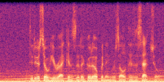 | 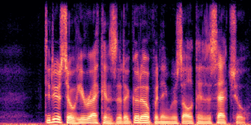 | 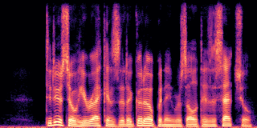 | 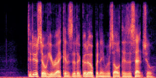 | 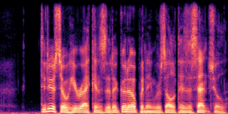 |
| p232_270 | 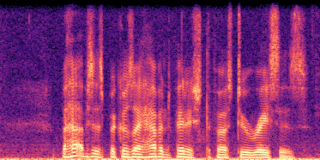 | 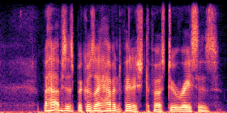 | 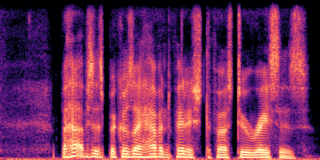 | 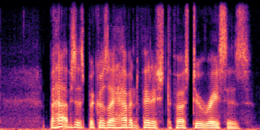 | 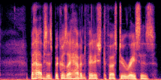 |
| p232_223 | 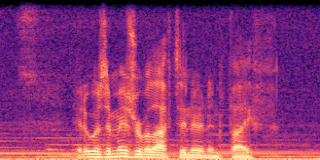 | 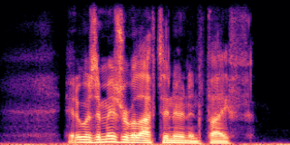 | 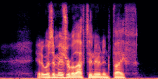 | 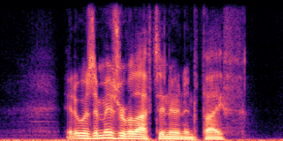 | 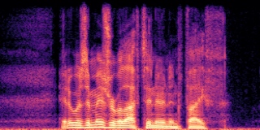 |
| p232_109 | 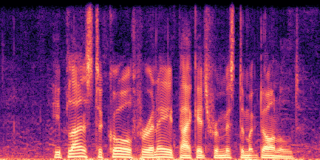 | 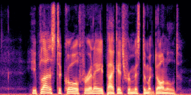 | 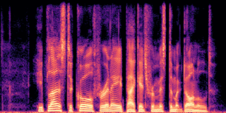 | 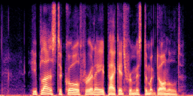 | 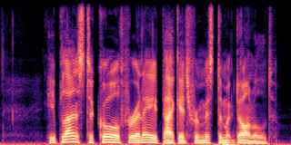 |
| p257_135 | 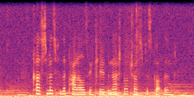 | 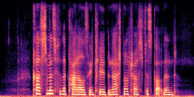 | 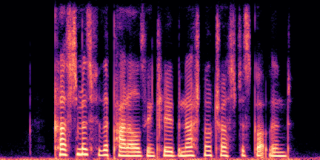 | 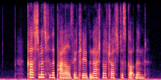 | 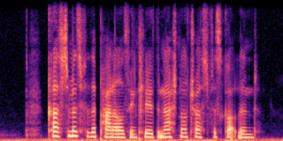 |
| p257_012 | 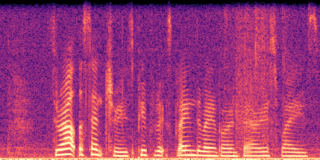 | 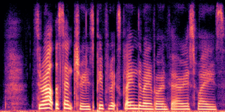 | 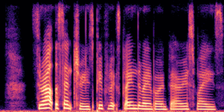 | 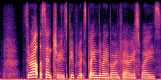 | 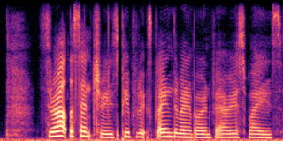 |
| p257_011 | 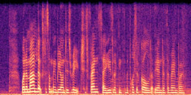 | 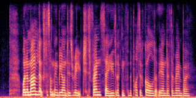 | 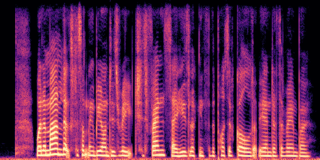 | 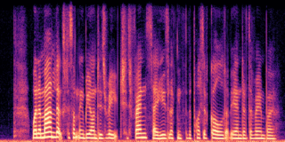 | 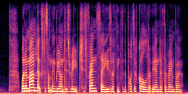 |
| p257_006 | 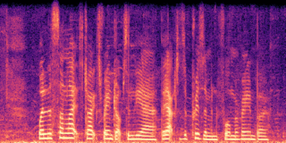 | 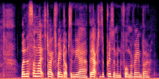 | 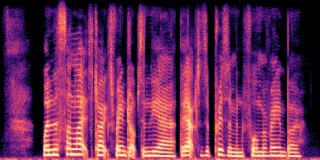 | 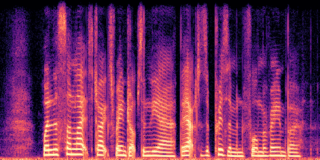 | 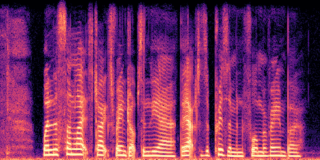 |
Methods
Baselines were run with the authors' public code and checkpoints, default settings, and a fixed random seed (0). All models were trained on the VB-DMD training set at 16 kHz.
- SGMSE+ [1]: J. Richter, S. Welker, J.-M. Lemercier, B. Lay, T. Gerkmann,
“Speech enhancement and dereverberation with diffusion-based generative models,”
IEEE/ACM TASLP, 2023. Official VB-DMD checkpoint
(sp-uhh/sgmse,
train_vb_29nqe0uh_epoch=115.ckpt), default predictor-corrector sampler with 30 steps and one corrector step (60 NFE). - FlowSE [2]: S. Lee, S. Cheong, S. Han, and J. W. Shin,
“FlowSE: Flow matching-based speech enhancement,” ICASSP 2025. Official VB-DMD checkpoint
(seongq/flowmse,
VB_DMD_FLOWSE_ICASSP_2025.ckpt), Euler solver with 5 steps (5 NFE). - FlowSE (LRA, proposed): the skip-free waveform-domain backbone with latent representation alignment described in the paper, Euler solver with 5 steps (5 NFE).